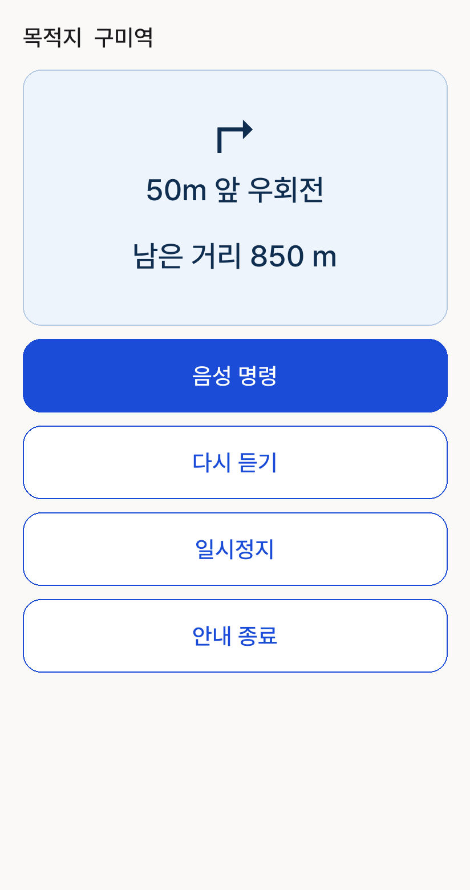
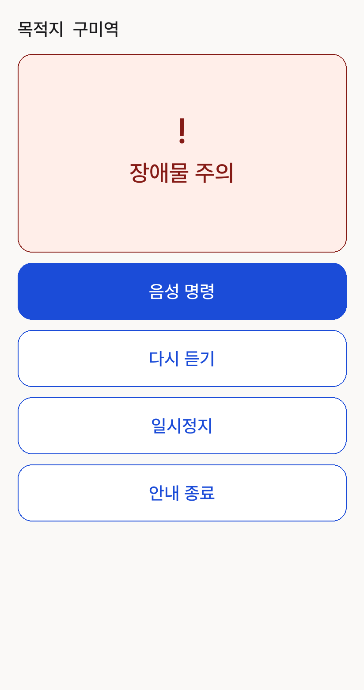
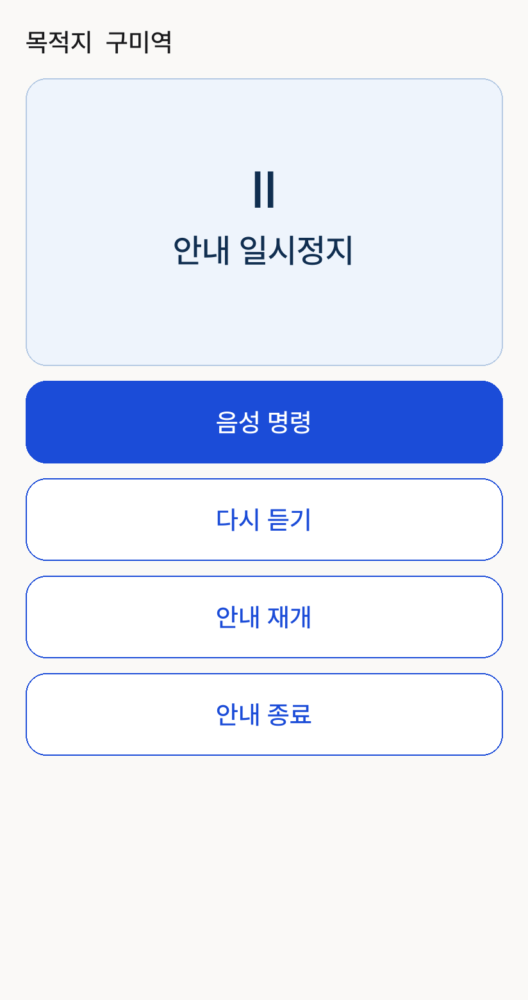
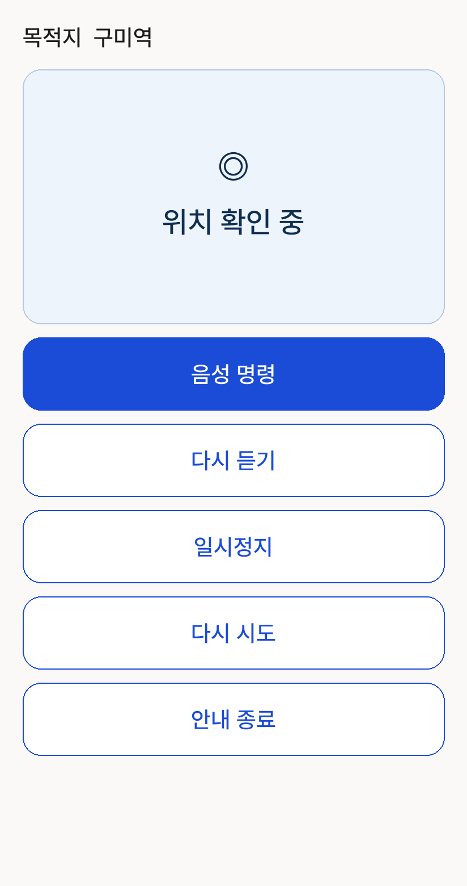
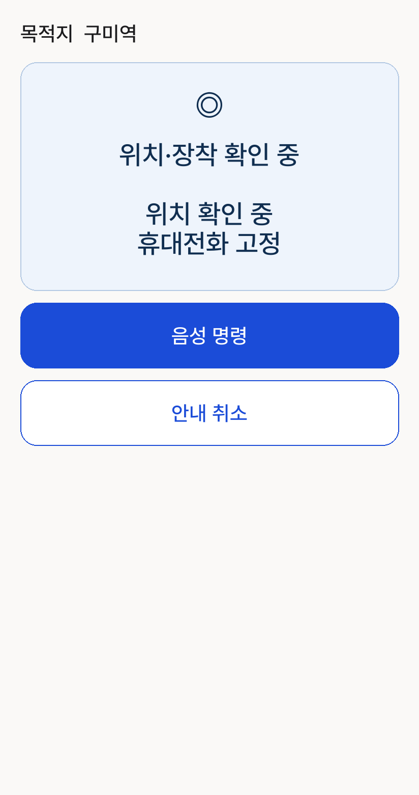
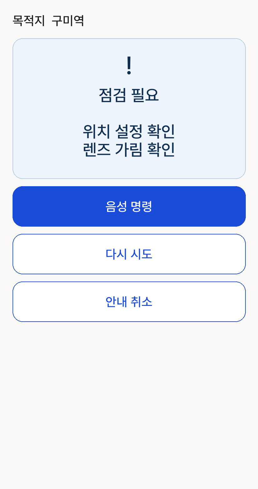

안내 진행 중

TalkBack 상세 문구
50m 앞에서 오른쪽으로 이동하세요.
남은 거리 850 m
경로를 따라 안내 중입니다.
다시 말해줘 · 보행 일시정지 · 보행 종료
화면 문구와 기호는 컴파일된 Kotlin 정책에 예시 상태를 입력한 결과입니다. Android 캡처는 아니며 폰트 패딩·기호 모양 등 렌더링 차이가 있을 수 있습니다.

50m 앞에서 오른쪽으로 이동하세요.
남은 거리 850 m
경로를 따라 안내 중입니다.
다시 말해줘 · 보행 일시정지 · 보행 종료

장애물 주의
전방에 장애물이 있습니다. 잠시 멈춰 주세요.

안내 일시정지
위치·경로: 경로 안내 실행을 준비하고 있습니다.
보행 재개 또는 보행 종료라고 말씀해 주세요.

현재 안내 기능이 제한되어 있습니다
위치·경로: 경로 안내에 필요한 정확한 현재 위치를 기다리고 있습니다.
다시 말해줘 · 보행 일시정지 · 보행 종료

위치·장착 확인 중
정확한 위치를 아직 확인하지 못했습니다. 위치 설정과 수신 환경을 확인해 주세요.
휴대전화가 흔들립니다. 거치대를 고정해 주세요.

점검이 종료됐습니다. 아래 원인을 해결한 뒤 다시 시도를 눌러 주세요.
위치 요청 실패. 휴대전화 위치 설정과 권한을 확인해 주세요.
카메라 렌즈가 가려져 있습니다. 가림을 제거해 주세요.